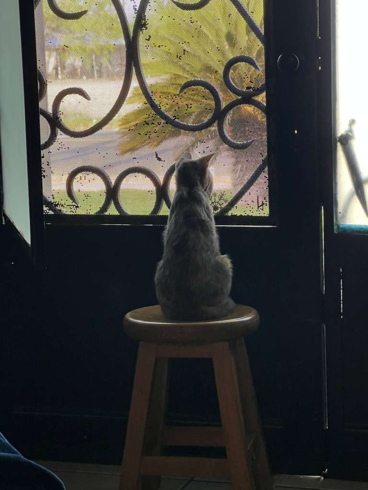

I actually woke up to my mom sending me an update on cipher, she has been really healthy and active compared to a month ago because she was sick. The image she sent me is cipher staring at the outdoors, she loves doing this specially from my mom's window. We do let her go outside but there have been times where she has gotten out on her own and she has to be grounded for it. Cipher is not very street smart and she risks being ran over by a car and fighting other cats. Luckily eveyone keeps her inside and she has a little friend inside anyways. Another update on Cipher is that she has been getting along with said baby cat more compared to when I left. They used to fight and play a lot, the thing is that the baby cat is really hyperactive but really likes screaming and it confuses us since we think she is being hurt. Luckily it seems that they have slowly learned eachothers boundries and are no longer as much of a nuisance to the rest of the family. Ciphers favorite food is eating cereal versions of her food so warm water and cat food or cat food mixed with canned wet food she can lick a whole bowl clean and then she takes her long nap for the day until something interests her again.